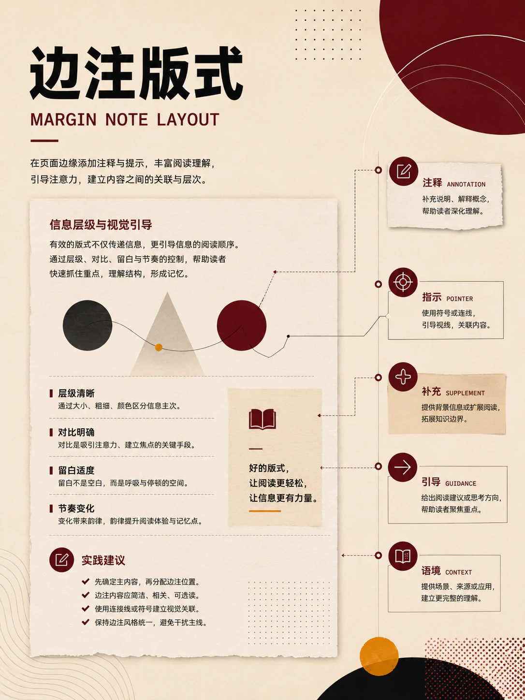

错态 · 引线交缠 (0/4)
实绘几何单真源
「注释」与「补充」在注槽里交叉打结
- 交叉 / 撞车
- 2 处交叉
- 最大错位
- 180px
- 主 : 注
- 58 : 42
- 390px 状态
- 挤 154px
MARGIN NOTE LAYOUT
在页面边缘添加注释与提示，丰富阅读理解，引导注意力，建立内容之间的关联与层次。
在页面边缘添加注释与提示，丰富阅读理解，引导注意力，建立内容之间的关联与层次。
EYE PATH & COGNITIVE COST
页底脚注和文末尾注对排版软件最省事，却让眼睛替它买单：读到一半跳去页底，看完再回头翻找刚才停在哪一行。边注版式换了一种契约——把补充解释平齐摆在主文外侧的宽余白里，让眼睛只需极短的水平余光扫一眼就回正，不看也能一路顺滑掠过。
原海报说「通过大小、粗细、颜色区分信息主次」。落在边注里，通常让边注字号停在正文的 72%–82%（经验参考带），字重放轻，或换用不同字色与纸底，使主文一眼胜出。
原海报说「对比是吸引注意力、建立焦点的关键手段」。但边注的对比要「克制」而非「抢戏」——用细折线、锚环或微暖衬纸做出识别度，绝不用高饱和大色块反压正文。
原海报说「留白不是空白，而是呼吸与停顿的空间」。正文与边注之间必须留出明确的注槽呼吸带，上下两条边注也要留白隔开，贴得过紧就会连成第二堵字墙。
原海报说「变化带来韵律，韵律提升阅读体验与记忆点」。页边并不是从头填到尾——有的段落密处落注、有的段落留整片清白，一疏一密才让长文读来不闷。
原海报左栏列出的「层级清晰、对比明确、留白适度、节奏变化」其实是几乎所有好版式都通用的四大基本功。真正让边注版式区别于普通分栏的两个硬条件，是水平平齐对锚（让视线不用上下找）与严格可选读（跳过它，正文照样完整通顺）。
FIVE MARGINAL ROLES
原海报右侧串起五枚深绛圆徽：注释、指示、补充、引导、语境。把五种不同语气混成一团，页边就会变得嘈杂；给每一种定清篇幅上限、纸面容器与连线语法，读者不用细看就能凭外观猜出这条边注值不值得现在停下来读。
HISTORY · FROM GLOSSA TO WEB
边注绝非当代屏幕的新潮点子。在近千年的东西方书籍史里，只要一本书需要把「原典」和「阐释」同时摊在读者眼前，书手、刻工与设计师一次次殊途同归地走向了宽边栏。
RESPONSIVE FOLDING
边注版式天生吃宽度——宽纸面和 1280px 桌面有富余的边白，390px 手机竖屏没有。拖动下方视口标尺，对比 4 种窄屏折返方案：真正靠谱的做法是在约 760px 断点以下及时退让，把宽屏并肩转换成手机上的「满宽正文 + 随文展开」或「段下轻注卡」。
好的长文排版会把主线叙事留在最顺眼的单栏宽度里，让术语释义 退居外侧余白，读者需要时只需扫一眼。
当视口缩到手机竖屏时，如果死守双栏比例，主文与边注都会被挤成碎条；改用行内轻触发 或段下轻注，才能守住阅读节奏。
WHEN TO AVOID & SIBLING LAYOUTS
PRACTICE · SPOT THE SOUND PAGE
ORIGINAL POSTER & KEYWORDS
